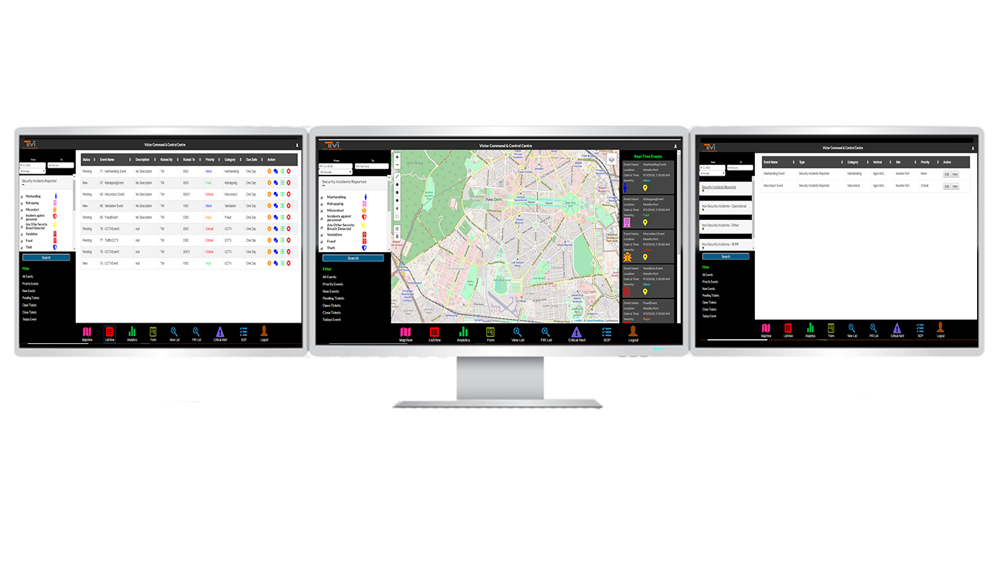

ICCC Integration

The ICCC solution integrates and uses data from multiple sources and makes sense of it on a single interface. It simplifies the disarray and multiplication of data sources that are necessary for understanding, yet that are too voluminous for easy consumption. ICCC provides a single interface to all systems of an enterprise or city to make them usable without being overwhelming. A flexible rules-based data flow directs large quantities of data into a structured format that can be used for reports and key performance indicators (KPIs).